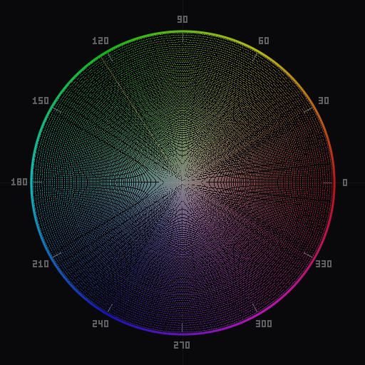
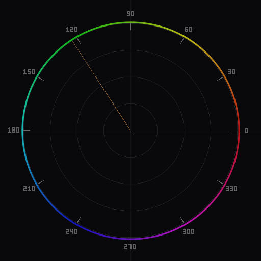
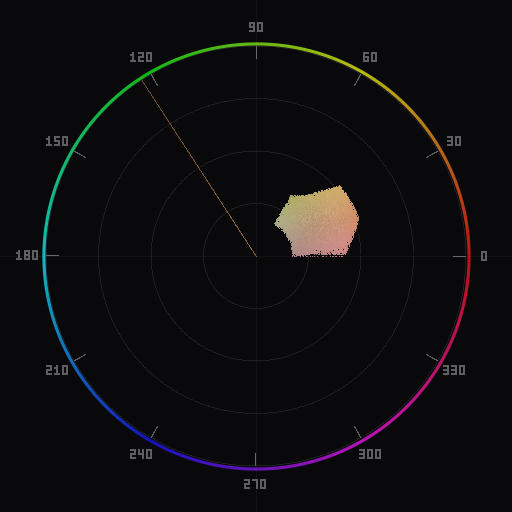

What Is a Vectorscope and Why Photographers Should Use One
A plain-language introduction to the circular chrominance plot and how it gives you an objective view of color that your eyes and monitor cannot.
What a vectorscope shows
A vectorscope is a circular graph that displays the chrominance—the hue and saturation—of every pixel in an image. It deliberately ignores luminance. Where a histogram tells you how bright your image is, a vectorscope tells you what colors are present and how saturated they are.

The concept originated in broadcast television. Engineers needed an objective way to verify that color signals were within legal broadcast limits, regardless of the quality of their studio monitors. The same principle applies to photography: your eyes adapt to ambient lighting, your monitor's profile drifts, and color perception varies from person to person. A vectorscope bypasses all of that.
Each dot on the plot represents one or more pixels. The position of that dot encodes two things: which color the pixel is (its hue) and how intense that color is (its saturation). The result is a map of your image's color distribution at a glance.
How it maps color
The vectorscope uses a polar coordinate system. Think of a color wheel flattened onto a graph:
- Angle represents hue. Red, yellow, green, cyan, blue, and magenta are arranged around the circle, typically following the YCbCr or YUV color model used in video. In that layout, red sits at roughly the 11 o'clock position and cyan at 5 o'clock, though exact placement varies by the color space being used.
- Distance from center represents saturation. A pixel with zero saturation (a pure gray) lands at the exact center. The more saturated the color, the farther it appears from center.
This means a completely desaturated, neutral image produces a tight dot in the center of the scope. A heavily saturated sunset will produce a wide spread reaching toward the red, orange, and yellow regions. A photo of a blue sky with green grass will show two distinct clusters: one toward blue, one toward green.

Different color space models place the primary and secondary colors at different angles. YCbCr, CIE LUV, and HSL are common choices. The underlying geometry stays the same—angle is hue, distance is saturation—but the specific arrangement of colors around the wheel changes. This matters when comparing scope readouts across tools, so it helps to know which color space your vectorscope uses.
Why use one instead of your monitor
Photographers invest heavily in calibrated monitors, and for good reason. But even a well-calibrated display has limitations that a vectorscope sidesteps entirely:
- Ambient light adaptation. Your visual cortex continuously adjusts to the light around you. If you edit for an hour under warm tungsten light, you gradually stop noticing a warm color cast in your images. A vectorscope does not adapt. If the data is shifted toward orange, it shows you that shift every time.
- Monitor gamut and profile. Most editing monitors cover sRGB or Adobe RGB, but the actual rendering depends on the ICC profile, the panel's age, and the backlight temperature. A vectorscope reads the pixel values directly from the image data, not from your screen's rendering of them.
- Perceptual bias. Simultaneous contrast—the effect where surrounding colors change how you perceive a color—is well documented. A gray patch looks warm next to a blue background and cool next to an orange one. A vectorscope is immune to this; it plots the value, not the perception.
- Consistency across devices. If you share your work or hand off files to a retoucher, the vectorscope plot looks the same on any system. It is an absolute measurement, not a subjective impression.

None of this makes monitors irrelevant. You still need your display to compose, dodge and burn, and judge the overall feel of an image. But the vectorscope acts as a second opinion—an objective one—that catches problems your eyes miss.
How photographers use vectorscopes
The vectorscope is not just a diagnostic tool. It is a practical instrument for several everyday editing tasks:
White balance verification. After setting white balance by eye or with the dropper tool, check the vectorscope. A neutral scene—one without a dominant color—should produce a cluster centered on or very near the crosshair. If it is offset, you have a residual cast. This is especially useful for mixed lighting situations where the dropper tool gives ambiguous results.
Skin tone accuracy. Most vectorscopes include a skin tone reference line running from the center toward approximately 123 degrees (in the YCbCr model). Regardless of ethnicity, healthy skin tones in a photograph cluster along or near this line, varying in saturation but not in hue angle. If your portrait's skin cluster drifts significantly off this line, something is wrong with your color balance.
Color grading. When applying a deliberate color grade—a teal-and-orange look, for instance—the vectorscope shows you the exact distribution of the grade. You can see whether the shadows are truly shifting toward teal or just toward a muddy blue, and whether the highlights are reaching orange or veering into red.
Color harmony analysis. By overlaying harmony guides—complementary, triadic, or analogous zones—on the vectorscope, you can see whether your image's colors fall into a coherent harmonic scheme or scatter randomly. This is useful both for evaluating existing images and for guiding deliberate grading.
Saturation control. The vectorscope makes over-saturation immediately obvious. If dots are hitting the outer edge of the scope, those colors are at or near the maximum saturation for the color space. This is a concrete signal to pull back the vibrance or saturation slider, rather than relying on your eyes alone.
Getting started
If you have never used a vectorscope, the best way to learn is to open a photograph you know well and watch the scope as you adjust basic controls. Move the white balance slider and watch the cluster shift. Push the saturation slider and watch it expand outward. Desaturate fully and watch everything collapse to center. Within a few minutes, the relationship between the plot and your edits becomes intuitive.
For a detailed walkthrough of reading the display, continue to How to Read a Vectorscope.
Chromascope provides a real-time vectorscope inside Photoshop and Lightroom Classic, with support for multiple color spaces, density visualization modes, and color harmony overlays. Download it here to add a vectorscope to your editing workflow.